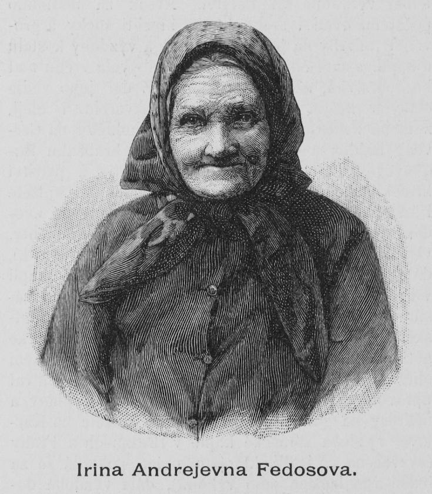
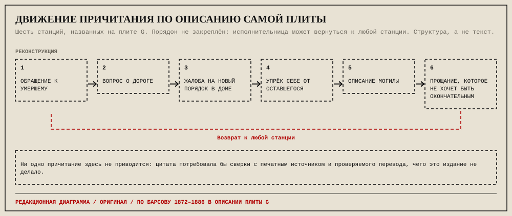
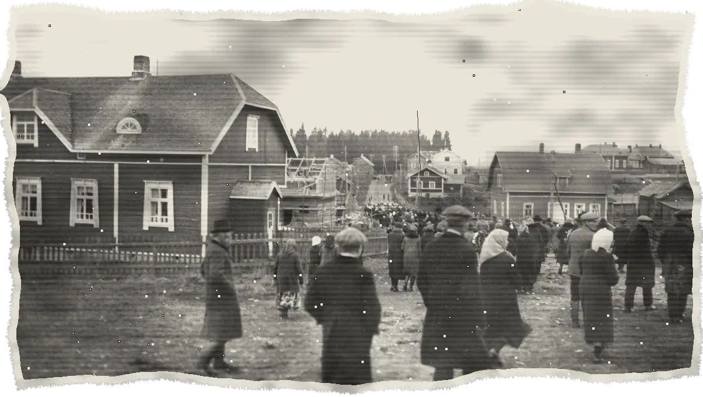
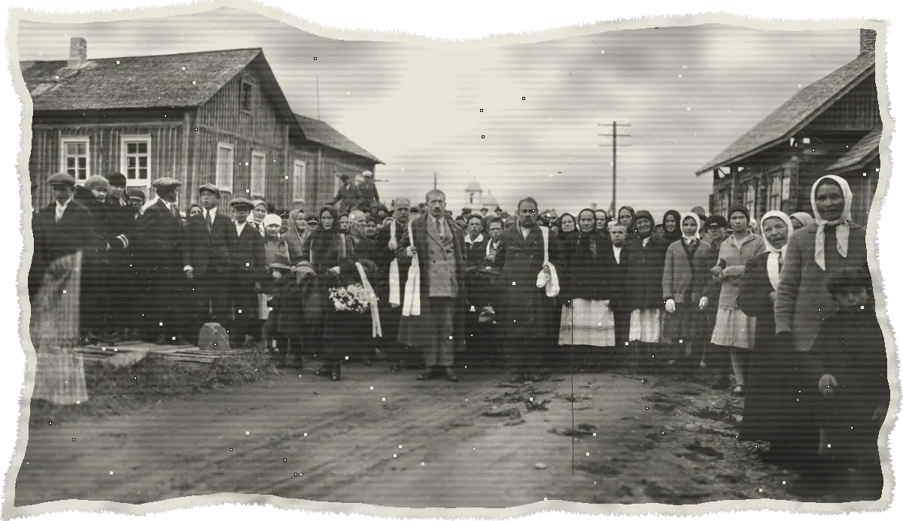
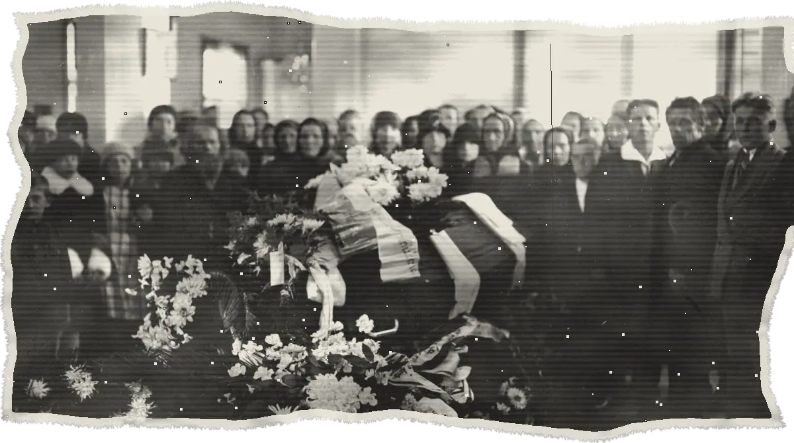
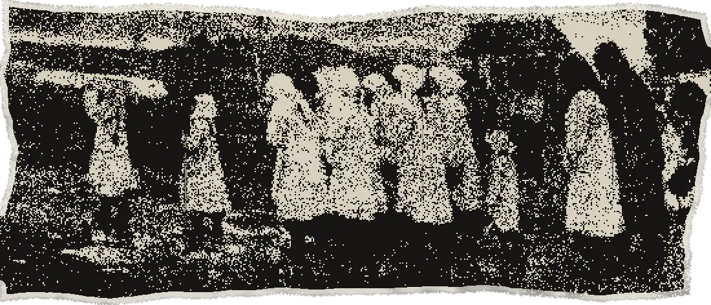

ТОМ I · ЛИСТ G · 07 / 09
ГОЛОС
Причитание, эвфемизм и грамматика обращения
С мёртвыми разговаривают. Грамматика этого обращения — одна из самых точно зафиксированных вещей в русской этнографии и одна из тех, что реже всего цитируют точно.
Записано в 1872–1886 годах и позже · Олонецкая губерния (Карелия) и Русский Север · Народное причитание; православный богослужебный язык

G / 03
Второе лицо
Сличение с корпусом северных причитаний (Барсов 1872, ч. I; Кузнецова, Ковыршина 2000, с. 153–160) подтверждает, что погребальный язык плача держит умершего исключительно во втором лице единственного числа («ты») и в настоящем времени на протяжении всего обряда. Вопленница обращается к усопшему через устойчивые родственные эпитеты — «кормилец ты мой», «сударушка ты мой», «свет-надежа ты моя» — и задаёт непрерывные риторические вопросы («На кого ты нас покидаешь?», «Куда снаряжаешься?»), требующие невозможного ответа. Обиходные эвфемизмы смерти («ушёл», «не стало») в плаче отменяются: причитание строится как напряжённый драматический диалог, удерживающий покойника в качестве живого собеседника вплоть до опускания гроба в яму. Формы третьего лица появляются лишь тогда, когда плакальщица прерывает прямое обращение, чтобы дать указание копателям, усовестить односельчан или воззвать к Богу.
| Термин | Значение | Регистр | Как используется здесь |
|---|---|---|---|
| покойник | умерший, покойный | нейтральный, слегка официальный | существительное для мёртвого |
| усопший | уснувший | литургический | только церковный контекст |
| кончина | смерть, уход (человека) | литературный / возвышенный | письменный регистр |
| преставление | успение, отшествие | богословский | только вероучение |
| поминки | поминальная трапеза, поминовение | бытовой | трапеза и действие |
| сороковины | сороковой день | бытовой / региональный | обряд сорокового дня |
| Радоница | весенний день поминовения | церковный / региональный | приходской календарь |
| заложный | «заложный», нечистый покойник | научный термин | категория Зеленина, с оговоркой |
| кладбище | место погребения | нейтральный | современная институция |
| погост | церковный двор с могилами; село с церковью и кладбищем | исторический | досовременная форма |
| голубец | могильный крест под крышей | региональный / описательный | один тип могилы |
| смертное | одежда, хранимая на случай смерти | региональный | узелок со смертной одеждой |

G / ВОЛОГОДСКАЯ ЗЕМЛЯ
День похорон в причитаниях, как его описывают вологодские исполнительницы
Исследование Елены Югай опирается на похоронные причитания восточной части Вологодской губернии, изданные Б. Ефименковой (1980) и самой Югай (2011), и начинается с предостережения: олонецкие причитания в томах Барсова не представляют всех русских причитаний, потому что его рассказчицы Федосова, Богданова и Пашкова не были обычными причитальщицами, а их тексты очень длинны и богаты; для верной картины нужен большой корпус более коротких текстов, например новгородских (Бердяева 2015) и южноуральских (Рожкова и Моисеева 2008) (с. 166). Она пишет, что в дореволюционной России причитания были обязательной частью похорон, с разными видами для разных этапов, и что с тех пор жанр утратил эту роль (с. 167).
Названия, которые дают причитаниям сами исполнительницы, отмечают моменты: «когда на лавке лежит», «когда гроб несут», «на кладбище», причём последнее покрывает причитания при рытье могилы, в годовщину и при посещении кладбища в Троицкую субботу. В день похорон, как она описывает, родные причитают в доме умершего, а гости — по дороге к нему. Текст рассказывает о поисках: причитальщица просыпается, умывается, ищет умершего во дворе и в доме, находит его в красном углу и упрекает за молчание. Когда помощники закрывают гроб, она причитает снова, прося не закрывать. Полное «прощание в доме» может занимать сотни строк. По дороге на кладбище умерший прощается с домом, улицей, деревней, лесами и со всем миром; на кладбище причитание успокаивает умершего, которого ждут умершие родные; последнее причитание поют на обратном пути (с. 167–168).
Информантки отделяют эти причитания от поминальных, которые более символичны, менее импровизационны и ближе к лирическим песням и которые могут петь в первые 39 дней (на девятый или двадцатый), на сороковой день, в годовщину, в праздники или в любой день. Считается, что душа приходит на поминальный пир: в некоторых вологодских деревнях накрывают стол для душ и вешают чистое полотенце, чтобы они вымыли руки, а причитание их приглашает. На западе губернии есть причитание-приглашение умершего в баню; на востоке баню топят, но особого причитания к ней нет. Сегодня, говорит она, исполнительница нередко знает одно короткое причитание, собранное из традиционных формул, и поёт его и на похоронах, и на поминках (с. 168–169). Это описание одного автора по одному региону; о том, насколько широко та же последовательность держалась в других местах, оно не говорит.
Собственное примечание Барсова о похоронном обеде показывает причитания как порядок исполнения. В олонецком описании, где стол для умершего ставят на печь (Ладейнопольский уезд), вопленицы начинают с первым блюдом: сначала причитают священнику и церковникам, потом родственникам, соседям и посторонним присутствующим; ходят по избе, кланяются во все четыре угла и причитают во всех местах, где сидел, лежал и ходил покойник, затем выходят на сарай, во двор и, если близко, в поля. То же повторяется после второго и третьего кушанья, после каждого вопленицы меняются, а священника провожают со слезами, веря, что вместе с ним покойник возвращается на кладбище (1872, с. 309). Введение Барсова также фиксирует, как к причитаниям относились церковь и государство. Он цитирует Стоглавый собор 1551 года, жаловавшийся, что в Троицкую субботу мужи и жёны на могилах плачутся с великим кричанием, а когда начнут играть скоморохи и гудцы, перестают плакать, пляшут и поют «песни сатанинские», и велевший священникам отклонять паству от этих «языческих обычаев» (гл. 4, вопр. 23); и указ 1715 года, которым Пётр I по случаю кончины царицы Марфы Матвеевны приказал, чтобы никто ни над ней, ни над другими умершими не издавал такого непристойного воя. Барсов пишет, что указ подействовал на европеизированный верхний слой и не имел никакого влияния на массу народа, и добавляет, что даже гроб самого Петра оплакивали народной причетью (с. VIII–IX). Оба текста приведены из вторых рук, а «языческий» — слово собора, а не вывод.
Вопленица по преимуществу является истолковательницей семейнаго горя
Исполнительница
Федосова и вопрос об авторстве
Большая часть причитаний в томах Барсова записана от одной женщины — Ирины Андреевны Федосовой (1827–1899), заонежской причитальщицы с севера Онежского озера; несколько текстов позже добавила от неё О. Х. Агренева-Славянская. По Кузнецовой и Ковыршиной, она родилась в деревне Вырозерского района (урождённая Юлина) и позднее жила в Кузаранде; её напевы записывали в 1886–1895 годах О. Х. Агренева-Славянская, С. Г. Рыбаков и Н. А. Римский-Корсаков, а фонографическая запись Ю. И. Блока 1896 года была расшифрована и опубликована много позже. Справочники расходятся в годе рождения, 1827 или 1831; атлас следует 1827, указанному в прочитанных научных статьях. Для листа это существенно. Жанр, описанный выше как формульный и общинный, дошёл до нас во многом через один исключительно искусный голос, записанный посторонними и не на похоронах. Филологи спорили, сколько в печатном тексте традиции, а сколько исполнительницы. Прочитанные здесь источники не позволяют атласу решить это, и он не решает.
Федосова была не единственным названным голосом. В списке исполнительниц, которым Барсов завершает первый том, названы пять женщин, и причитание № XI записано от крестьянки села Твердилова Калязинского уезда Тверской губернии Клавдии Момоковой: по его словам, она научилась причитать в своей деревне ещё девушкой, а на момент записи жила в Москве. Другая, Анна Первенцева, — дочь священника, учившаяся на погосте по воскресеньям и праздникам; третья, Марья Фёдорова из Каргополя, дочь дьякона, училась у старой причитальщицы, жившей в доме её родителей. Портреты принадлежат самому Барсову, избирательны и порой недоброжелательны и не содержат дат записи; они показывают, что собрание опирается на названных женщин разного положения, а не на безымянный «народ».





Text
Плач по сестре
Оригинал
Один из немногих полных плачей первого тома. Записан не на Олонецком Севере, а в Калязинском уезде Тверской губернии, напечатан под № XI. В реестре исполнителей (с. 326–327) Барсов называет её: Клавдия Момокова, крестьянка села Твердилова; она выучилась причитать в деревне ещё в девушках, а во время записи жила в Москве. Текст достаточно короток, чтобы напечатать его целиком.
Плач движется от ухода сестры «в незнакомые гости» к пустоте дома, утрате «тайного слова» и «заступушки», а затем к заклинанию ветров, земли, гробовой доски и савана. Просьба к умершей встать и заговорить — традиционный мотив; это не вера в буквальное возвращение. Последняя строка просит не о воскресении, а о том, чтобы тоска не длилась долго. Текст печатается в дореформенной орфографии; разбивка на строки и повторы сохранены. После последней строки Барсов даёт сноску с вариантом примерно в двадцать строк для места о ветрах, земле и саване; вариант здесь не воспроизведён.
- сурядилася / сподобилась
- Снарядилась, приготовилась в путь; ритуальный язык похоронного исхода.
- теремъ
- Горница, чистая изба; здесь в значении всего осиротевшего дома.
- заступушка
- Заступница, защитница; умершая сестра как опора плакальщицы.
- маяться
- Томиться, терпеть непрестанное горе и нужду.
Источник Е. В. Барсов, «Причитания Северного края», т. 1 (Москва, 1872), с. 162–164, № XI, строки 1–42. · открыть источник
Права Общественное достояние. Барсов умер в 1917 г.; том издан в 1872 г. Общественное достояние в России и США. Сверено постранично по скану Internet Archive, с. 162–164.

Аппарат источники · связанные листы · термины
Источники этого листа
- barsov1872 Барсов, Елпидифор Васильевич — Причитания Северного края (1872–1886)
- kuznetsova-kovyrshina2000 Кузнецова, В. П.; Ковыршина, Ю. — И. А. Федосова и вырозерская школа причитальщиц (2000)
- tolstoy1995 Толстой, Никита Ильич (ред.); Толстая, Светлана Михайловна (ред. т. 5) — Славянские древности: Этнолингвистический словарь (1995–2012)
- ivanits1989 Ivanits, Linda J. — Russian Folk Belief (1989)
- loiter2017 Лойтер, С. М. — Ирина Федосова в исследованиях К. В. Чистова (2017)
- iugai-letter Югай, Елена — «Из этого места не слышно речи, из этого места не получить письма»: письмо-весть в русских похоронных причитаниях (по-английски) (2016)
- krinichnaya1997 Криничная, Н. А. — На росстани: мифологема судьбы в фольклорно-этнографическом освещении (1997)
Ссылки, даты обращения и ограничения — в списке источников.
Связанные листы
Термины этого листа
Библиографическая ссылка
Археология русской смерти. Лист G: ГОЛОС. Причитание, эвфемизм и грамматика обращения // Атлас материальной культуры и этнографии погребального обряда / Под ред. проекта «Русская смерть». 2026. URL: https://DmitryLeLeE.github.io/rus_death/ru/plates/g-voice.html.